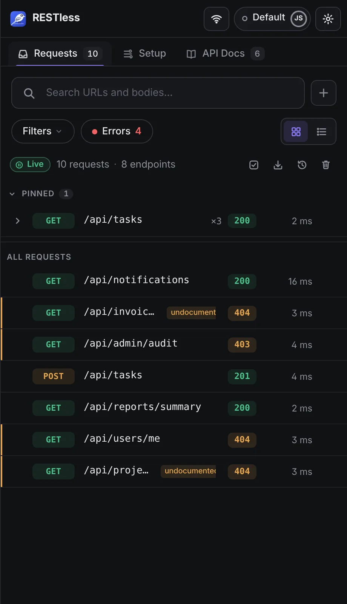

Getting started
Install RESTless, open the panel and start watching your app’s API calls.
Install
- Clone the repo or download it as a ZIP from GitHub.
- Open
chrome://extensionsand turn on Developer mode. - Click Load unpacked and pick the
restlessfolder. - Reload the tab with your app.
Open the panel
Click the RESTless icon in the toolbar, or press Ctrl+Y. The panel opens beside your page.
Turn on recording
RESTless records nothing until you allow it, one site at a time. Click Record this site, or Record and reload to catch the calls the page makes while loading.


Find your way
- Requests: every call the app makes.
- Setup: your variables, and your mocks, rules and breakpoints.
- API Docs: your OpenAPI / Swagger docs.
These tabs sit under the header. Open requests get their own tabs below them, visible everywhere.
In the header: where your requests go (Send to / Send as), the Offline switch and Settings.
Tip: Ctrl+click a button or table in your app (or right-click → Inspect API call) to jump straight to the call behind it.